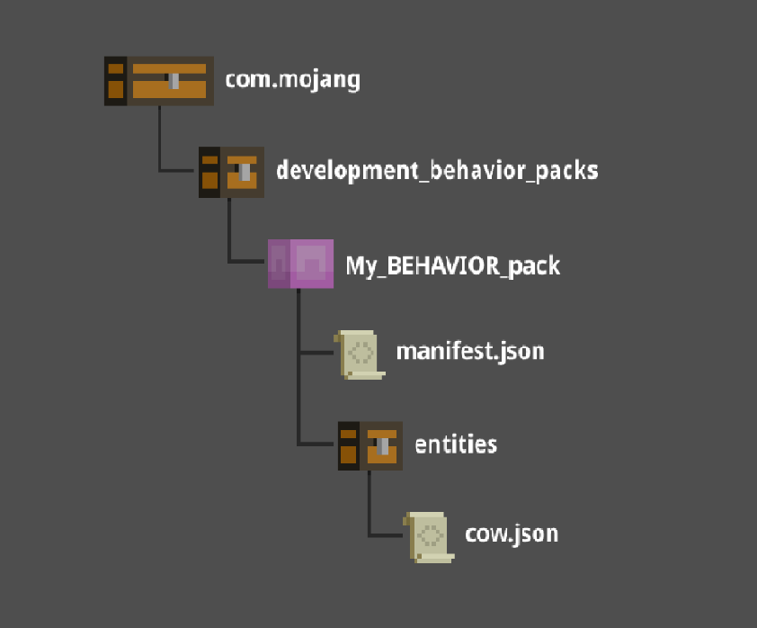

Antes de crear tu primer complemento para Minecraft: Bedrock Edition, deberás crear un pack para guardar tu contenido personalizado.
Hay dos tipos de packs que puede hacer un creador: los packs de recursos y los packs de comportamiento.
Un pack de comportamiento es una estructura de carpetas con archivos que impulsan el comportamiento de las entidades, los botines, las reglas de generación, los objetos, las recetas y las mesas de comercio.
Cómo crear el pack de comportamiento
Un pack de comportamiento contiene archivos que los creadores (¡como tú!) usan para agregar, eliminar o alterar el comportamiento de juego de las entidades dentro de Minecraft. Un archivo de comportamiento de una entidad es lo que hace que cada entidad realice ciertas acciones
Para que Minecraft encuentre y use tus archivos de comportamiento, tienes que configurar las carpetas y los archivos en una estructura particular.
